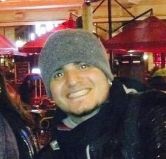

Team

Marcelo da Fonseca
I'm Marcelo, i'm 23 years old. I believe as the main source for innovation, is the motivation to always move forward. I am currently Studying Computer Science Bachelor in UnB. This allowed me in the project to also act as a developer.
See profile
Guilherme Ozaka
I am Guilherme, undergraduate student. I'm studying Computer Degree at UnB. I am a programmer and entrepreneur. Driven by new experiences.
See profile

Leandro Ferreira
I am 24 year old. Undergraduate student of Computer Science at UnB and I had been External Project Manager at CJR,4 years of experience in the field of Web Development. What drives me today is the goal of being the best what I do for my coleagues and family.
Ver Perfil